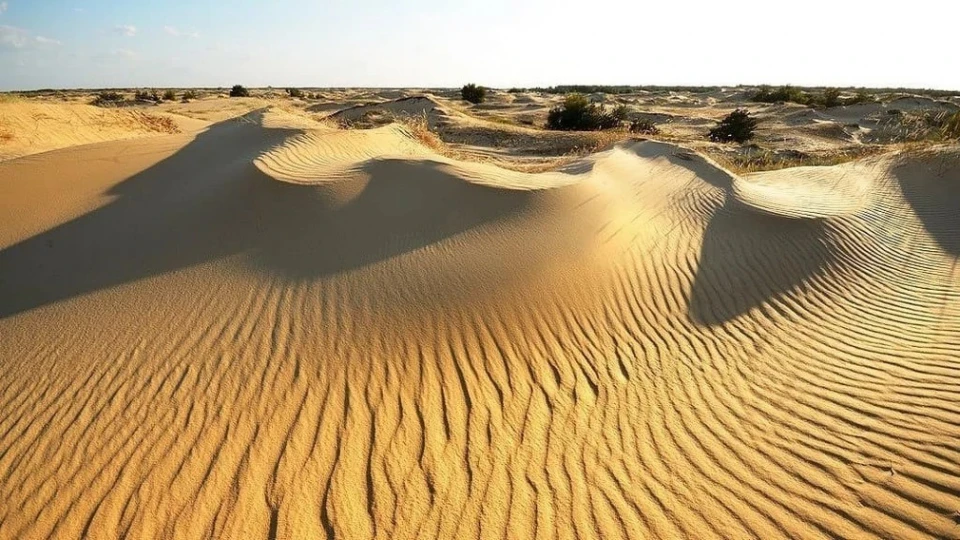
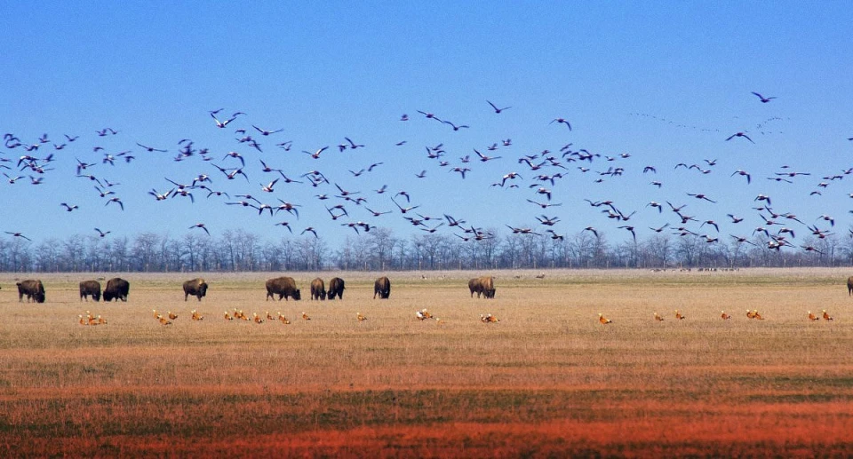

України багата архітектурними пам'ятками, природними ландшафтами та культурними об'єктами, що мають свою власну неповторну історію. Вони заповнюють кожен куточок нашої багатогранної країни. Дізнаємося про ті неповторні місця, які втілюють красу та дух України через призму визначних об'єктів.
Олешківські піски
"Олешківські піски" - це унікальний природний заповідник, друга по площі найбільша піщана пустеля у Європі, що розташована у Херсонській області на півдні України. Ця природна піщана дюна простяглась на площі більше 1600 квадратних кілометрів. Піски вражають своєю красою і неповторністю ландшафту: безкрайні відкриті простори засипані піском, які динамічно перетворюються під впливом вітру, створюючи унікальні пейзажі. Ця територія відома своєю унікальною флорою і фауною, а також являє собою важливу зупинку для мігруючих птахів. З 2010 року "Олешківські піски" офіційно отримали статус національного природного парку, спрямованого на збереження та підтримку екологічних особливостей території.
Асканія-Нова
Асканія-Нова - це державний біосферний заповідник, розташований у Херсонській області на півдні України, займає близько 33 гектарів площі. Унікальне місце, яке зберігає різноманітність природи степової зони та є домом для багатьох видів рослин і тварин. На території заповідника проживає багато видів диких тварин, таких як антилопи, зебри, тури, коні та інші види, які роблять це місце ідеальним для екологічного туризму та спостереження за дикою природою. Заповідник пропонує відвідувачам різноманітні екскурсії, які дозволяють побачити природні багатства та відчути атмосферу цього унікального місця. "Асканія-Нова" є центром наукових досліджень у сферах екології, ботаніки та зоології. Тут працюють вчені, які вивчають природні процеси та розробляють стратегії збереження біорізноманіття.
Лемурійське озеро

Лемурійське озеро відоме як "рожеве озеро" або херсонське «Мертве море» є одним із природних див Херсонської області, що розташовано біля села Григорівка. При огляді карти для виявлення місцезнаходження рожевого озера помітно, що поруч розташована велика водойма - Сиваш. Їх розділяє тонка смуга суходолу. Озеро вражає своїм рожевим кольором води, який утворюється завдяки великій кількості специфічних видів водоростей Дуналіелла та бактерій. Це природне явище, тому відтінок може змінюватися в залежності від умов середовища. Не менш важливо, що озеро відноситься до солоних водойм, адже містить велику кількість мінералів та солей. Тому за корисними властивостями і солоністю його часто порівнюють із Мертвим морем в Ізраїлі. Озеро є важливим в екологічному аспекті, як унікальний природний об'єкт.
Бакота

Затоплене село Бакота - це чарівне місце, що розташоване майже в 50 км від Кам’янця-Подільського в Хмельницькій області. Перші відомості про Бакоту датуються 1024 роком в літописах, але розкопки вказують на наявність поселень язичників на цих територіях значно раніше. У першій половині XIII століття Бакота вважалась столицею Пониззя, яке входило до складу Галицько-Волинського князівства. Проте її стрімкий розвиток припинився, коли монголо-татари захопили ці землі. А при радянські владі, внаслідок будівництва Дністровського гідровузла 1981 року, Бакота була виключена з облікових даних, місцевих жителів відселили і село пішло під воду. Сучасною Бакотою є територія на березі Дністра, що входить до національного природного парку "Подільські Товтри". Печерний монастир, лікувальні джерела, заспокійлива тиша та мальовничі краєвиди приваблюють туристів відвідати українську "Атлантиду".